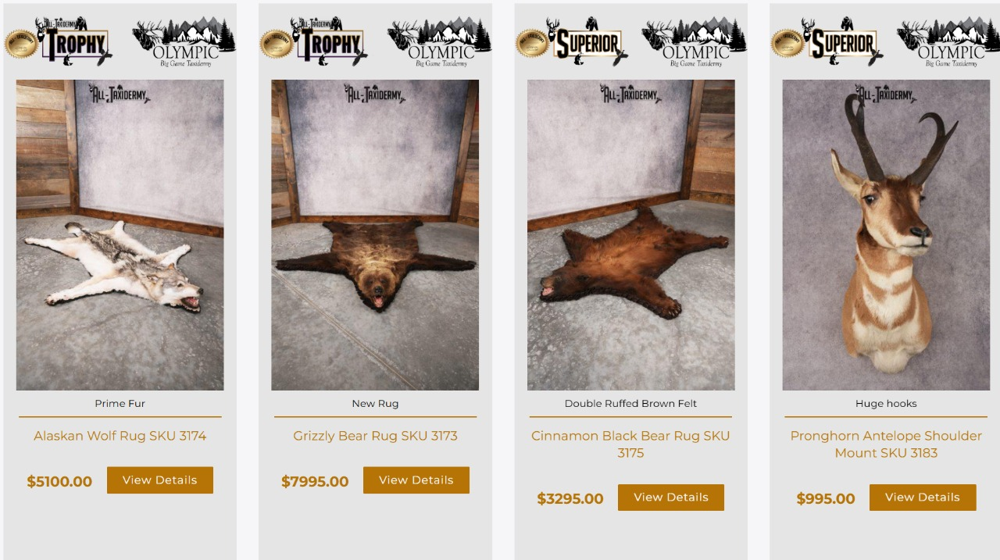

DISN Wildlife Research Project
Advancing the fight against wildlife trafficking through innovative data science and machine learning approaches
Project Overview
Wildlife trafficking is a global crisis affecting biodiversity, ecological systems, and public health. This illicit trade generates $7-23 billion annually and encompasses fashion, exotic pets, traditional medicine, and accessories. During the COVID-19 pandemic, traffickers shifted from face-to-face to online interactions, creating new challenges but also opportunities for digital detection.
Our interdisciplinary project combines computer science, criminology, and environmental science to develop innovative tools for discovering, analyzing, and disrupting wildlife trafficking networks operating online.

The Challenge
Online marketplaces publish millions of ads, but identifying wildlife-related products is like finding a needle in a haystack. For example, searching for "shark" on eBay returns toys, shirts, vacuum cleaners, and only a few actual shark products. Even specific queries like "shark jaw" return irrelevant fossil items. This makes data collection and analysis extremely challenging for researchers studying wildlife trafficking patterns.
Our Solution
We developed Learn to Sample (LTS), an innovative approach that leverages Large Language Models (LLMs) to efficiently identify and classify wildlife-related advertisements. Our method combines clustering techniques, multi-armed bandit algorithms, and active learning to create cost-effective, specialized classifiers for different research questions while maintaining high accuracy.

Our Approach
Our Learn to Sample methodology addresses the fundamental challenge of identifying relevant wildlife advertisements in massive online datasets. We use clustering to ensure diverse sample selection, multi-armed bandit strategies to balance exploration and exploitation, and active learning to iteratively refine our classifiers.
This approach enables researchers to create specialized models for different wildlife trafficking research questions at a fraction of the cost of traditional methods, making large-scale wildlife trafficking analysis accessible to researchers and law enforcement agencies worldwide.
This project is funded by the NSF